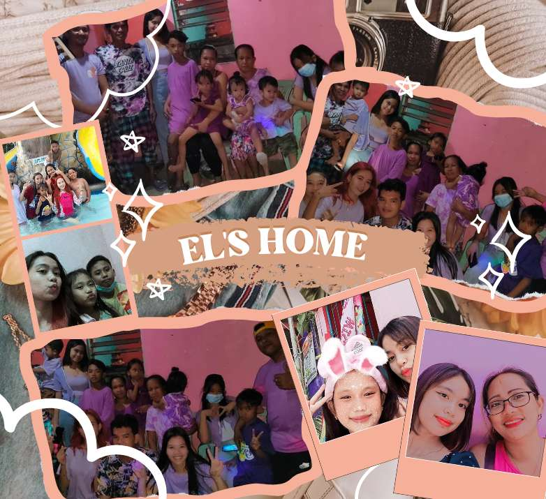

I may not have the most perfect family but I can still say that I'm grateful to have them. They're also one of the reason why I'm continuingly striving for my dreams. They're also supportive in everything. Also I am so grateful that they're so so soooo supportive throughout my Fan Girling especially my dad he may not be in the photo but I am thankful that he's my dad. Life has ups and downs, but I'm still grateful I have them in my back.
Words can't express how grateful I am to have such amazing friends. The friends I have right now is so amazing and I'm thankful that I have them with me. Yes, life is tough but I still consider myself pretty lucky. I learn a lot becuase of them and I'm still willing to learn more.